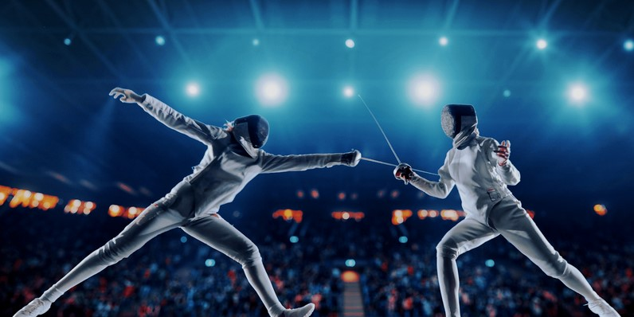

Eskrim genel anlamda bir saldırı ve savunma sporudur. Buradaki temel amaç 14 metre uzunluğu ile 2 metre genişliğe sahip olan metal pistte, rakibin belirlenmiş olan bölgelerine dokunmaya çalışmaktır. Bu dokunuşların her birine tuş denir. Özellikle günümüz teknolojisi ile gerçekleşen dokunuşlar üzerinden otomatik olarak puan ekrana yansır. Böylece haksızlık yapılmadan puan sporcunun hanesine yazılır. O yüzden mutlaka belli bir eğitim alınarak bu sporun yapılması büyük öneme sahiptir.
Her spor dalında olduğu gibi eskrim sporu için de belli başlı bazı kurallar mevcuttur. Tabii bu kurallar yapılacak müsabakaya bağlı olarak değişkenlik gösterir. Yani kullanılan silah üzerinden eskrim sporu farklı kategorilere ayrılmaktadır.

1- Flöre ile Eskrim Sporu Oyunu
Ucunda küçük bir düğme olan ve 110 santimetre uzunluğu ile 500 gram ağırlığındaki çubuk üzerinden eskrim sporu yapılmaktadır. Bu oyun içerisindeki kurallarda silah rakibin sim yeleğine dokundurulması yatar. Eğer her iki oyuncu aynı anda sim yelek üzerine dokunursa atak yapan kişi puanı alır. Elektrikli yelekler üzerinden gelen sinyaller kapsamında puan hesaplaması gerçekleşir.
2- Epe ile Eskrim Sporu
110 santim uzunluğunda olan ve 750 gram ağırlığındaki epe eşliğinde, profesyonel eskrim sporu yapılır. Bu kategorideki kurallar sadece belli bir bölgede vücudun tüm farklı noktalarını ele alır. Elektronik sinyalizasyon üzerinden giysi kapsamında nereye dokunulursa puan eklemesi gerçekleşir. Epe üzerinden tek lamba yanarak kişinin puan aldığı anlaşılır.
3- Kılıç ile Eskrim Sporu
Bu kategoride kılıç hem kesme hem de dürtme amaçlı değerlendirilir. Rakibin belden yukarı kısmının farklı noktalarına kılıcın ucu veya kenarları ile dokunmak gerekir. Yapılan her dokunuş üzerinden sayı kazanılır. Aynı şekilde vücudun bütün farklı kısımları için dokunuş kurallar kapsamında geçerlidir.